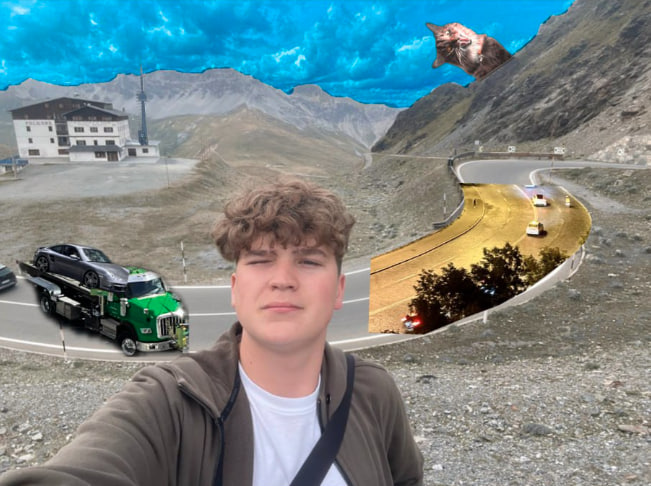
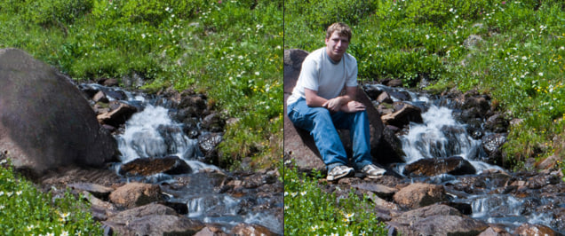
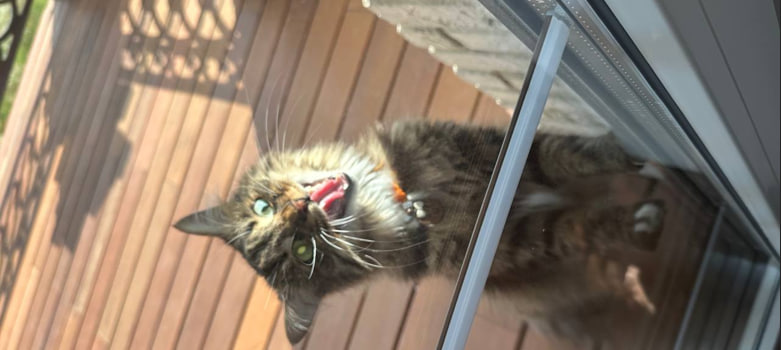

Hi — I’m Ivan Rudenko
Creative digital artist & video editor. I use GIMP, Canva and mobile tools like CapCut to create cinematic edits, compositions and short promotional videos.
Quick bio:
I combine photography and digital composition to create surreal visual stories — like the mountain edit in my gallery. I'm learning professional editing workflow and storytelling through visuals.
Gallery — Selected works
Main example: edited mountain image. Below are image slots — all my works

Mountain Scene Edit — created in GIMP. Multiple layers combined to make a cinematic look.


Research & Inspiration
Before creating the portfolio, I analyzed how modern digital artists and video editors present their work online. I focused on layout, visual hierarchy, color palette, and how media is showcased.
- Portfolio websites that use clean, minimal layout to keep attention on the visuals.
- Cinematic image editing techniques: color grading, atmospheric depth, composition layers.
- Video editing reels that emphasize rhythm, timing, and emotional tone.
Inspiration 1 — Cinematic Photographers
I looked at photographers who use dramatic lighting and color contrast to create mood.
I tried to apply similar techniques in my mountain composition edit.
Inspiration 2 — Digital Artists Who Blend Images
Artists who combine multiple photos into surreal scenes influenced my approach to masking,
blending layers, and adding fog and lighting effects in GIMP.
Inspiration 3 — Short-Form Video Editors
I studied the pacing and transitions used by editors on Instagram and TikTok.
This helped me understand rhythm and how visuals match music in edits.
Planning (Timeline)
Short timeline of the TGJ4M project — what I did and when:
- Oct 28: I researched modern portfolio styles on Behance, Dribbble, and personal artists' websites. I analyzed what makes a portfolio look professional: consistent spacing, unified color palette, strong hero image, and clear navigation. I decided to build a clean and minimal visual style with dark tones and teal/orange accents.
- Oct 29: I sketched and experimented with logo ideas. I tried different shapes and font combinations and selected a simple geometric logo that represents my personal brand identity. I also finalized the color palette: black / charcoal / teal + highlight orange.
- Oct 30: I edited the main artwork in GIMP. I layered multiple photos, masked landscapes, adjusted curves, added atmospheric fog, and color graded the scene to produce a cinematic mountain composition. I exported the final version at high resolution.
- Oct 31: I created poster layouts and visual banners in Canva. I worked with typography, alignment, white space, and visual hierarchy. I made multiple compositions and selected the best ones for the website.
- Nov 1–2: I started building the website. I wrote HTML structure, created sections (Hero, Gallery, Research, Planning, Reflection), and applied CSS for layout, spacing, shadows, and responsiveness. I added image upload + preview features.
- Nov 3–4: I tested the site on different screen sizes (laptop and phone). I fixed spacing, adjusted grid responsiveness, improved accessibility (alt text, headings), and refined text for clarity.
- Nov 5: Final polish. I reviewed the whole portfolio, checked spelling, replaced placeholder images, adjusted video preview, and prepared to submit final URL to Canvas.
Reflection
This project helped me understand how to present my creative work in a structured and professional way. Creating a portfolio required not only artistic skills, but also planning, layout design, and technical knowledge of web development. The most meaningful part for me was editing the main mountain composition in GIMP. I learned how to blend images using masking, gradients, and color grading to achieve a cinematic mood. I also improved my ability to balance visual elements such as contrast, symmetry, and atmosphere. Building the website taught me how layout and typography impact how the viewer understands and experiences artwork. I focused on spacing, simplicity, and clarity so the content would feel clean and easy to explore. The dark background with accent colors helped highlight the visuals and create a consistent personal brand style. If I were to continue or improve this project, I would add more motion elements: animated transitions between images, hover effects, and possibly a video reel showing my editing workflow. I would also expand the gallery with more edited photos and short video compositions to better represent my full creative range. Overall, the project strengthened my skills in digital composition, visual storytelling, and portfolio presentation. It helped me express my personal style and understand the importance of design choices when showcasing creative work.